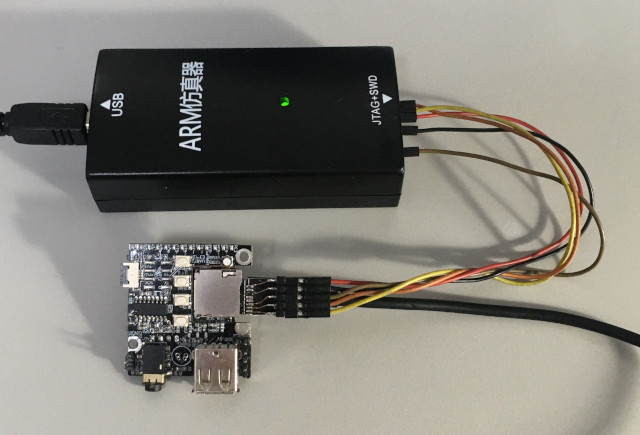
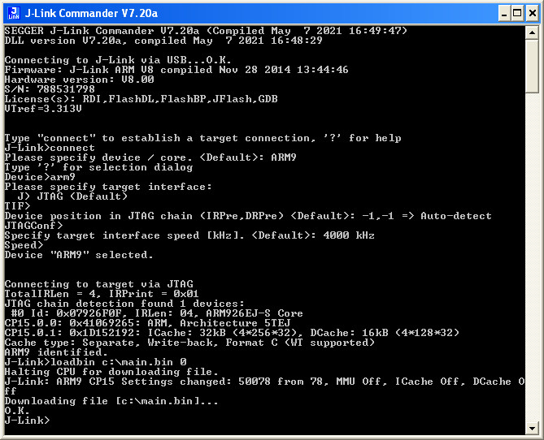
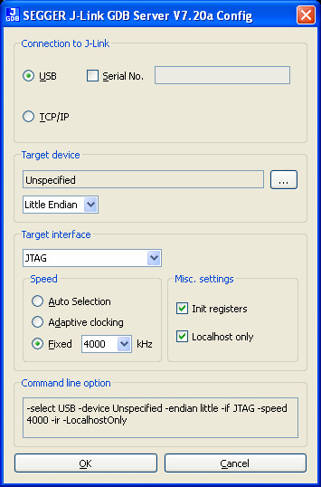
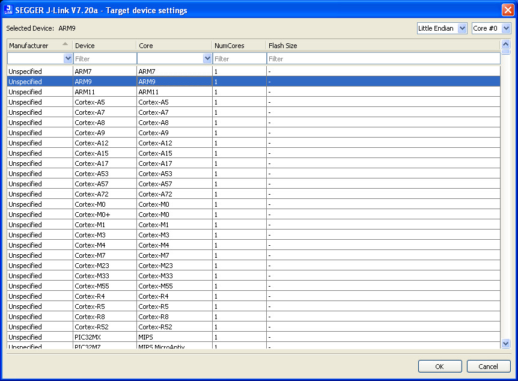
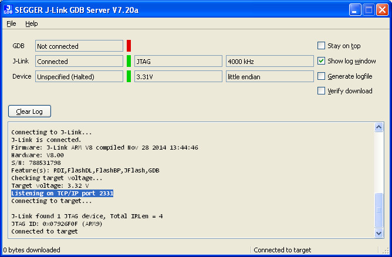
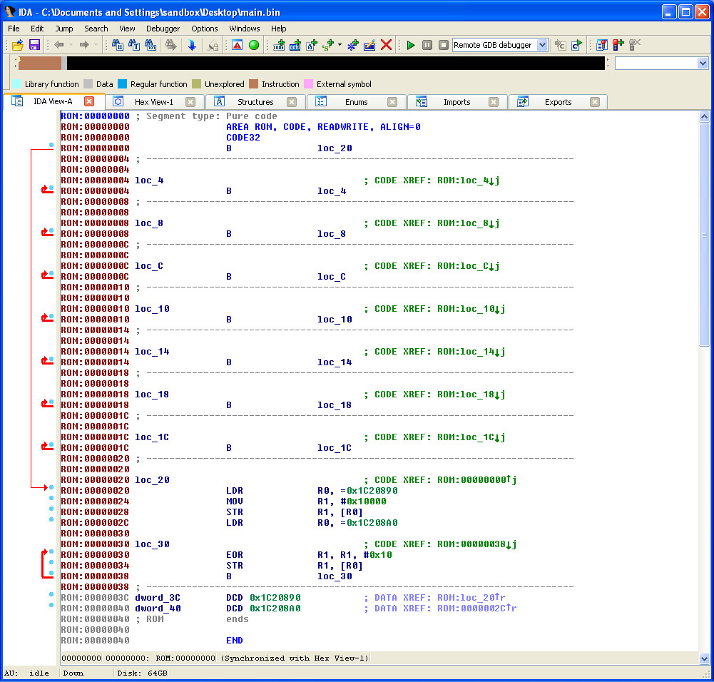
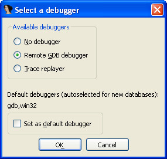
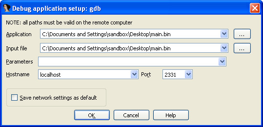
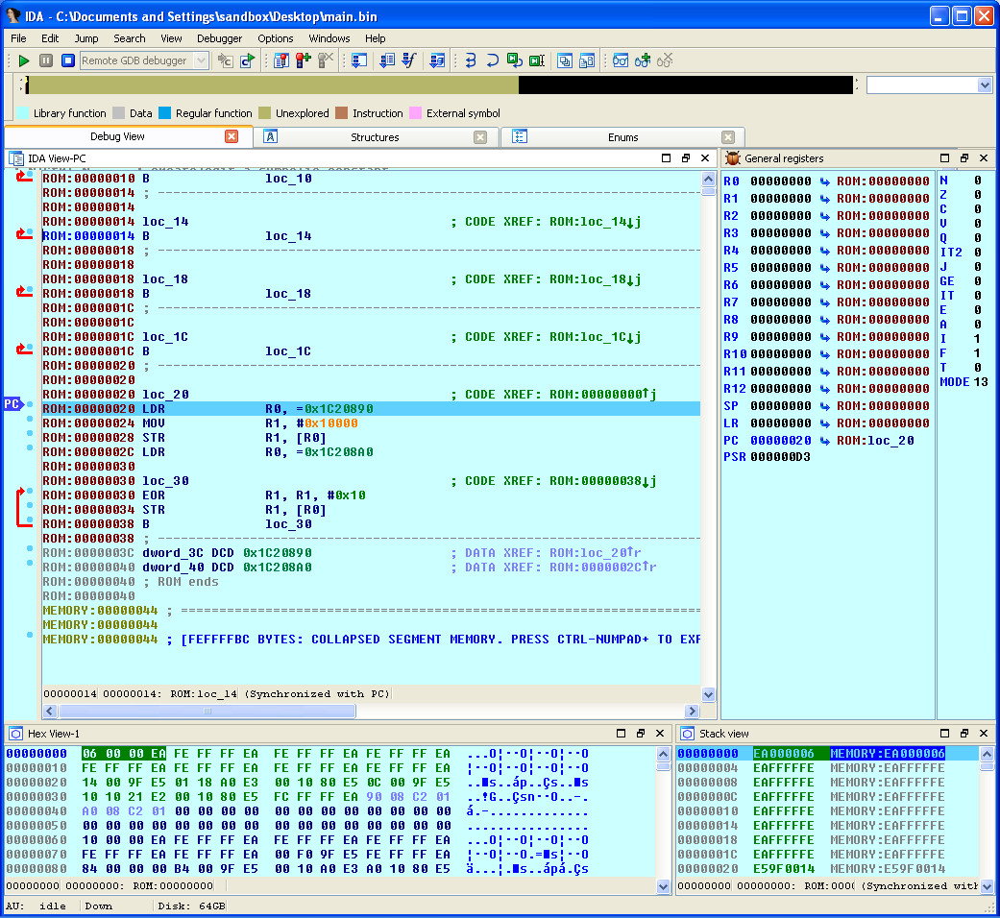

參考資訊：
https://whycan.com/t_1003.html
https://whycan.com/t_2025.html
https://whycan.com/files/members/3/TF_SDNAND_JTAG_V002.pdf
https://github.com/nminaylov/F1C100s_info/blob/master/JTAG/allwinner_f1c100s.cfg
F1C100S JTAG腳位(和MicroSD共用腳位)
| TMS | PF0, SDC0_D1 |
|---|---|
| TDI | PF1, SDC0_D0 |
| TDO | PF3, SDC0_CMD |
| TCK | PF5, SDC0_D2 |
連接J-Link

.global _start
.equ GPIO_BASE, 0x01c20800
.equ PE_CFG0, (GPIO_BASE + (4 * 0x24) + 0x00)
.equ PE_DATA, (GPIO_BASE + (4 * 0x24) + 0x10)
.arm
.text
_start: b reset
_undef: b .
_swi: b .
_pabort: b .
_dabort: b .
_reserved: b .
_irq: b .
_fiq: b .
reset:
ldr r0, =PE_CFG0
ldr r1, =0x00010000
str r1, [r0]
ldr r0, =PE_DATA
0:
eor r1, #0x10
str r1, [r0]
b 0b
.end
main.ld
MEMORY {
RAM : ORIGIN = 0, LENGTH = 32K
}
SECTIONS {
text : {
*(.text*)
} > RAM
}
編譯
$ arm-none-eabi-as -mcpu=arm9 -o main.o main.s $ arm-none-eabi-ld -T main.ld -o main.elf main.o $ arm-none-eabi-objcopy -O binary main.elf main.bin
下載程式到RAM(loadbin c:\main.bin 0)







